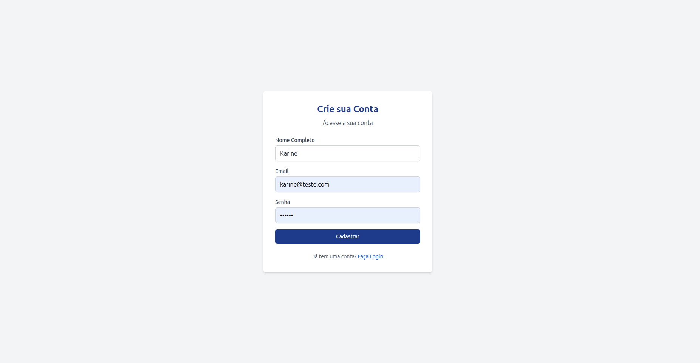
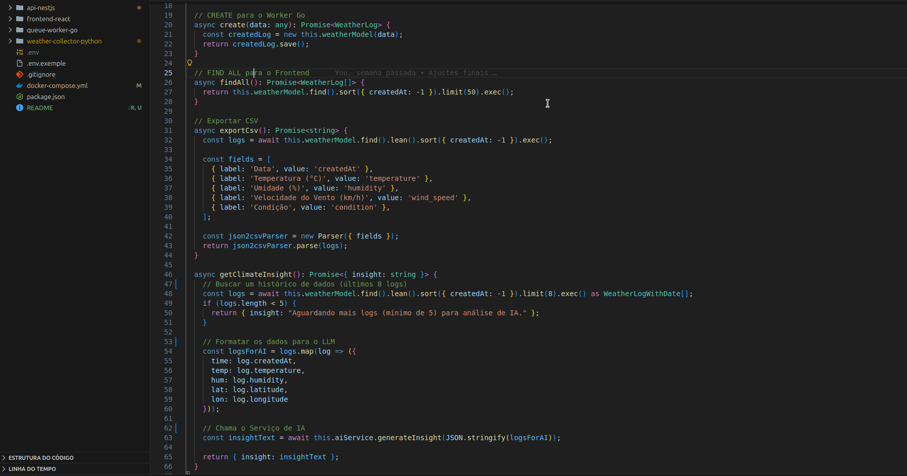
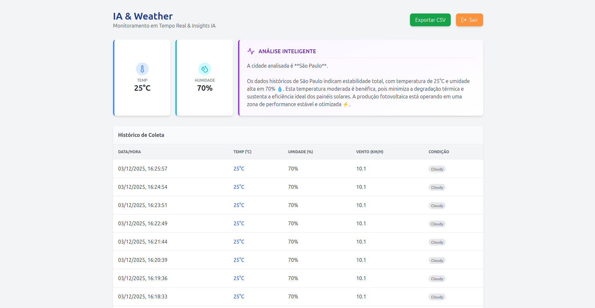
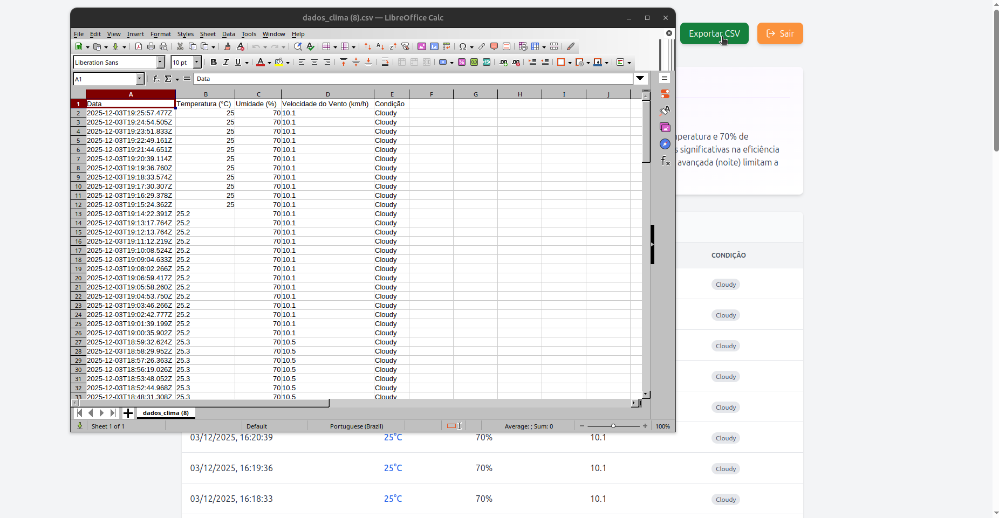
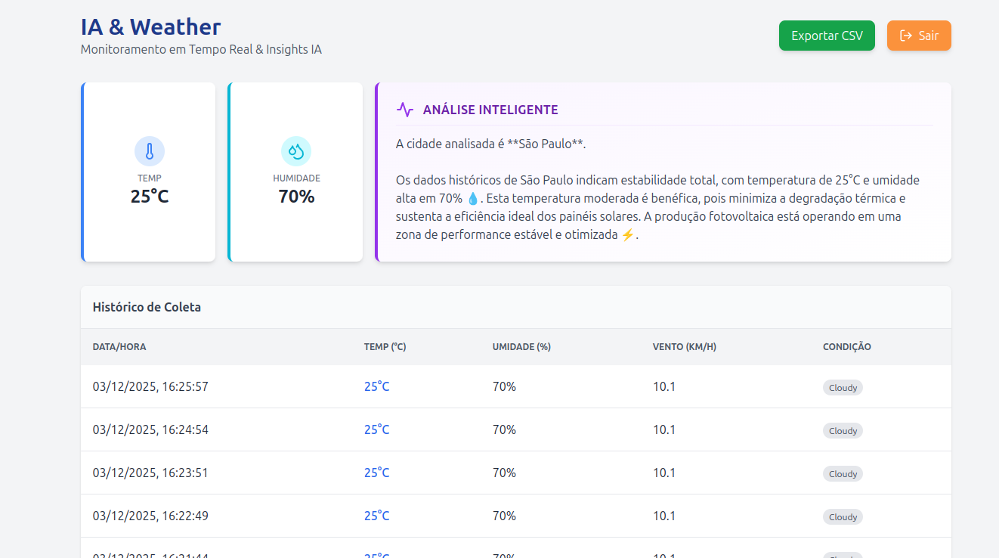
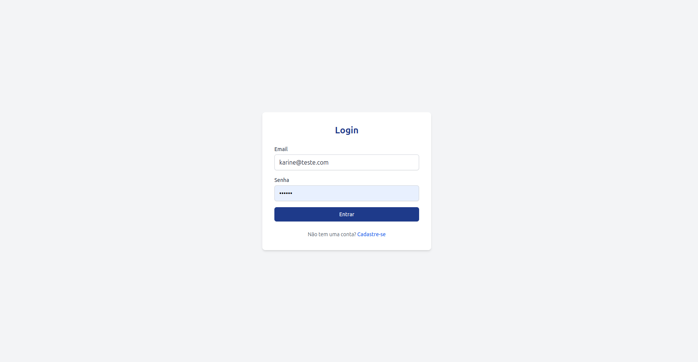

Clima & IA
Este é um projeto de monitoramento climático desenhado para simular a análise de dados em ambientes críticos, como usinas fotovoltaicas. A arquitetura do projeto e construída em microsserviços, garantindo que o sistema seja resiliente e capaz de lidar com picos de informação sem interrupções. Toda a solução é containerizada com Docker, permitindo que o ambiente completo seja inicializado com um único comando.
A ideia é que dados que são buscados de uma API externa, sejam processados e analisados pela Inteligência Artificial, que retorna um insight sobre como o clima pode impactar a eficiência da produção de energia. esses dados sao buscados apatir da longitude e latitude de um local, que foi entregue diretamente no codigo, a IA reanaliza esses dadso a cada 30 segundos, e novos dados são resgatadas pela API a cada 60 segundos.
O verdadeiro diferencial do projeto reside na Inteligência Artificial. Integrado com o Google Gemini, o sistema analisa o histórico recente de temperatura e umidade para gerar um Insight proativo. Em vez de apenas dizer 'está quente', a IA avalia a tendência e informa o usuário como a condição climática pode afetar a eficiência da produção de energia. Por fim, o Dashboard em React apresenta todos esses dados e análises de forma limpa e intuitiva, com um sistema de login seguro e a funcionalidade de exportação de relatórios para CSV.






Desenvolvido com:
Backend & Microsserviços:
Go (Golang), Node.js / NestJS, Python, TypeScript.
Frontend:
React.js,Tailwind CSS, Vite, Axios.
Infraestrutura & Dados:
Docker, RabbitMQ, MongoDB.
Arquitetura de microsserviços:
Generative AI: Integração com LLMs (Google Gemini API).
JWT & Bcrypt: Autenticação e Segurança.
Git/GitHub: Controle de versão e fluxo de Pull Requests.
Docker: Orquestração de containers.
Disponível no GitHub como privado
Gostou deste projeto?
Ele está disponível no GitHub com visualização privada e documentação completa. Vamos conversar sobre como posso aplicar essas tecnologias na sua ideia!